Chapter 5 Business cycle fluctuations
By the end of this chapter, you should be able to:
- Download data from widely available statistical databases.
- Interpret index series (Price indices, Industrial production indices, …) and construct indexed variables
- Construct annual growth rates of monthly or quarterly series to produce smooth series that are easier to interpret.
- Identify recessions using macroeconomic data and understand the issues and limitations associated with such an exercise.
- Use this knowledge to collect data and the appropriate data plots to describe a business cycle event.
5.1 Introduction
Economic events of significance at the macroeconomic level generally involve developments occurring simultaneously in three markets, the market for goods, the labour market and the financial market. Equilibrium in each of these markets determines both the quantities produced and purchased and their prices, the changes of which are tracked by national statistical agencies to inform policymakers and are widely commented in the financial press.
- Goods market: the quantities are the consumption and investment goods and services that form GDP (on the expenditure side) and the associated price is the aggregate price level (which determines the inflation rate).
- Labour market: the quantity is the amount of labour employed (and the amount of labour that is not employed or the unemployment rate) and the associated price is the wage that is offered as a compensation for labour effort.
- Financial market: the quantity is the quantity of credit (and saving or lending) and its price is the cost of borrowing or the interest rate.
Macroeconomic models of short-term business cycle fluctuations such as the 3-equation model developed in Carlin and Soskice (2015) attempt to explain the simultaneous change in each of these (endogenous) variables following (exogenous) shocks.
5.2 Describing the business cycle
The diagram below represents the hypothetical path taken by GDP around its long-run trend at the business cycle frequency.
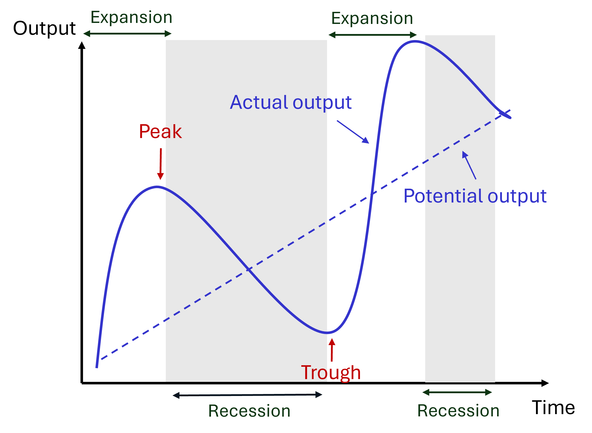
Some useful definitions:
- Potential output: long-run trend in output, which may also characterise the medium-run equilibrium output, consistent with equilibrium in the labour market.
- Output gap: deviation of actual from potential output (sometimes expressed as a %).
- Recessions and expansions: period of decline or rise in economic activity.
- Peak: positive deviations from trends or expansions culminate in peaks, the turning point just before a recession.
- Trough: negative deviations from trends or recessions culminate in troughs, the turning point just before an expansion.
- Depth or amplitude of fluctuations: maximum deviation from trend (either negative or positive) during recessions and expansions.
- Frequency of cyclical fluctuations: number of peaks in GDP over a year.
The plot below represents both the level of real GDP (black line, left axis) and its annual growth rate (green line, right axis) in the United States between 1945 and 2025. The shaded grey areas represent recessions (NBER).
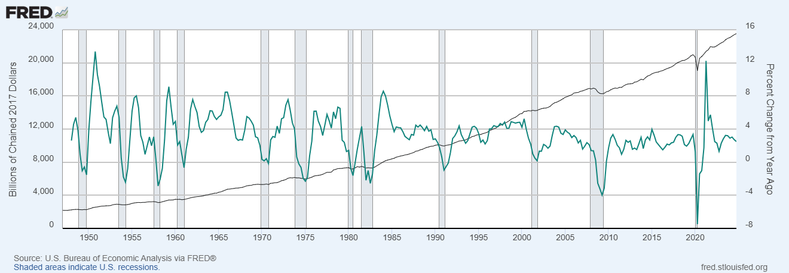
Several observations regarding the shape of the US business cycles emerge from the plot:
- The level of real GDP exhibits a steady increase over the 80 years. However the long-run trend is irregular, with periods of acceleration (late 1990s, mid-2000s, ..) and periods of stagnation (early 2000s, early 2010s, …).
- Recessions represent short-lived deviations around the long-run trend. These deviations span several months or quarters. In other words, they are persistent, making short-term predictions relatively easier (low growth in one quarter tends to be associated with low growth in the next quarter).
- Recessions and expansions are associated with sharp swings in real GDP growth, especially before the mid-1980s. The sharp swings that characterise turning points (peaks and troughs) suggest tehy are relatively unpredictable.
- The amplitude of business cycle fluctuations varies over time: GDP fell by up to 4% per year during the 2007-2009 recessions, up to 8% during the Covid pandemic, but did not fall during the 2001 recession.
- The frequency of fluctuations appears also to be irregular. The length of time between peaks and troughs of the business cycle (and therefore between recessions) varies over time and increased over the last 30 years.
Although there are some regularities, each period of recession and expansion has therefore its specificity. Understanding these similarities and differences can provide useful insights into the causes of business cycle fluctuations as well as the role and effectiveness of macroeconomic policies. Any study of business cycle events starts with a description grounded in observations of macroeconomic data.
5.3 Collecting macroeconomic data
In this section, we present four important sources of macroeconomic data for OECD economies which are freely available by government institutions and international organisations.
Here are a few things to consider before collecting data:
- Real variables are expressed at constant prices (usually “Chained”) whereas nominal variables are expressed at current prices. To describe the level of economic activity, we are usually interested in real quantities (eg real GDP, real consumption, real investment, …). However, it is possible to compare the behaviour of two variables over time using nominal variables.
- Whenever possible, select seasonally adjusted data: seasonal patterns (eg increased spending around Christmas) have been removed to make it easier to observe business cycle fluctuations.
- Frequency of data: business cycle events develop over months and quarters, it is therefore preferable to use quarterly or monthly data to describe them precisely.
5.3.1 FRED
The Federal Reserve Bank of Saint-Louis in the United States makes available a wealth of macroeconomic data for economies around the world via the Federal Reserve Economic Data (FRED) website: FRED Website
Country specific data can be accessed via this page: FRED Website: Countries
Note that the number of variables available for each country may vary.
Example: Japan Real GDP
The FRED database contains 2400 time series variables for Japan.
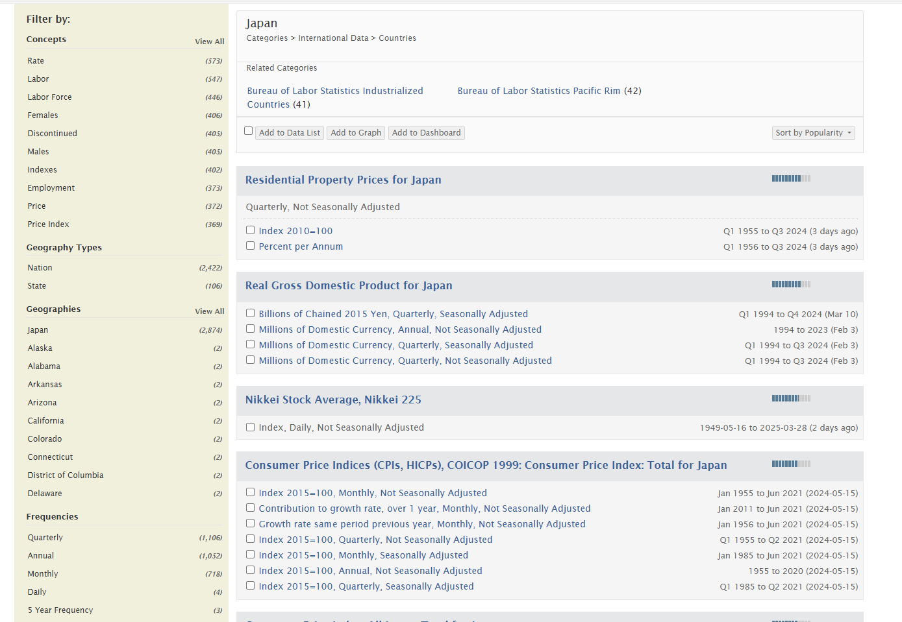
Selecting seasonally adjusted quarterly real GDP data for Japan lands us on the page below, where the sample period can be adjusted. To download the data into an Excel spreadsheet, click on “Download” and select “Excel (data)”:
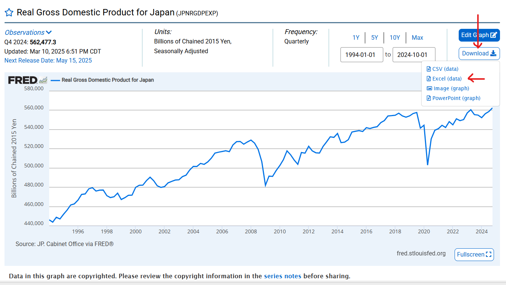
You may choose the “Edit Graph” options to make some simple transformations “Units” (change the level of real GDP into the quarterly or the annual growth rate) and “Frequency” of the data.
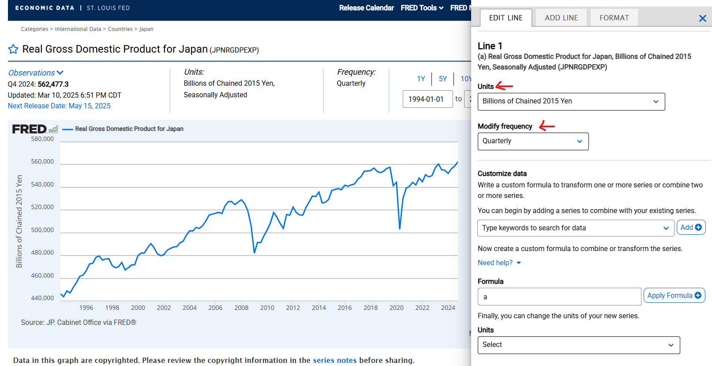
5.3.2 OECD
The OECD Data Explorer can be accessed via the following website: OECD Website
Example: Japan (hourly earnings)
As an example, let’s select the “Employment” category and go to “Benefits, earnings and wages”. Then scroll down and select “Hourly earnings”.
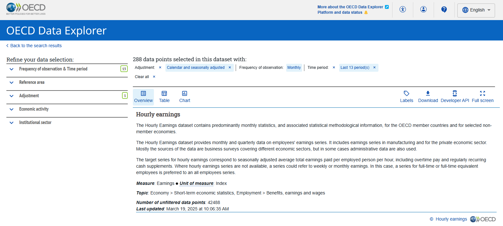
In the “Reference area” write / select “Japan”.
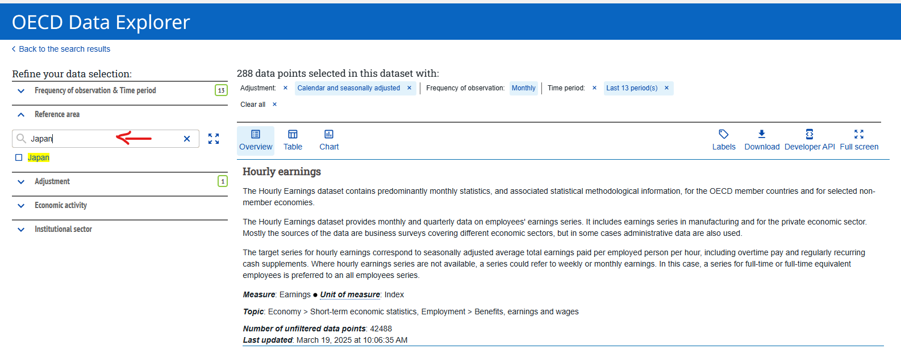
In “Frequency of observations & Time period” leave the “Last” cell blank, select “Table” to visualise the series available. If you are happy with the data selected, download it in Excel format.
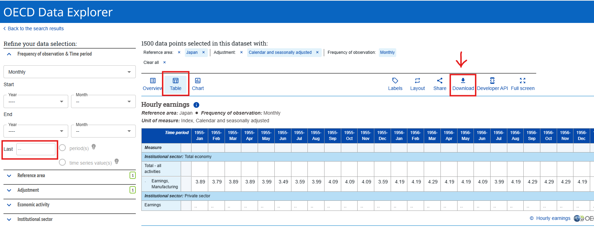
5.3.3 IMF
To access International Financial Statistics compiled by the International Monetary Fund (IMF): IMF Data portal Website
Leave the “Search IMF Data” box blank and click on “SEARCH”:
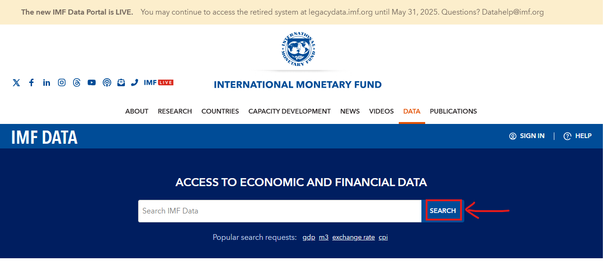
Example: Japan (industrial production)
Select “Japan” in the “Country” category, “Industrial Production”, in the “Topic” category, and “Production indexes (PI) in the”Datasets” category:
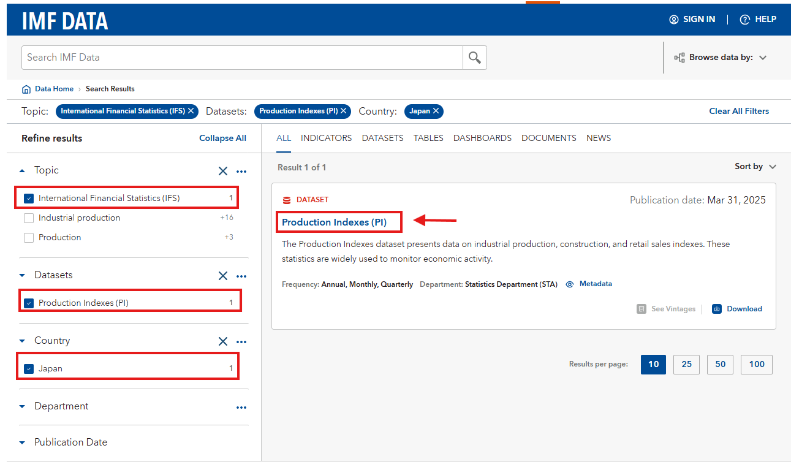
The result of the search is that to find data on Industrial production in Japan we need to access the Production Indexes (PI) dataset. Clicking on the dataset, and then on “VIEW DATA”:
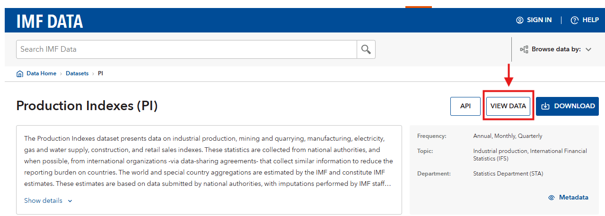
Selecting “Japan”, “Quarterly” frequency, “All” periods and downloading the data:
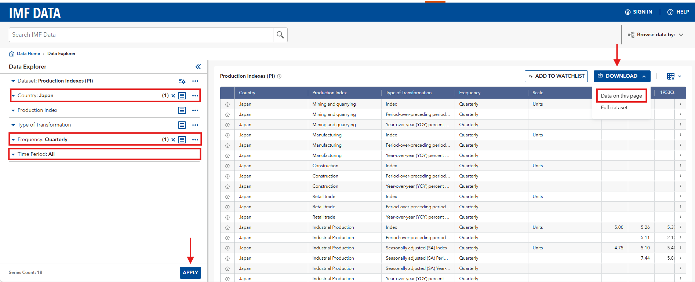
5.3.4 Other useful sources of data
- The World Bank website may provide additional information to complement the (at the annual frequency only): World Bank Open Data Website
To collect dat for a specific country, click on “Country”:
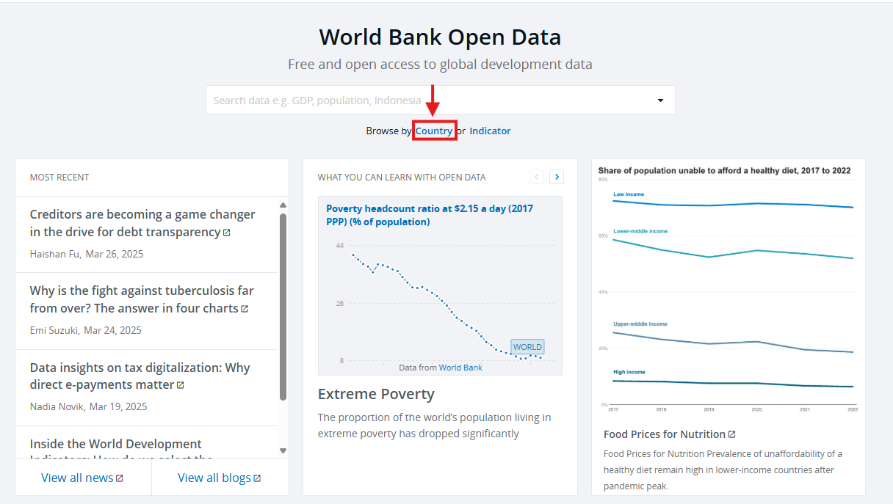
To download all the data available for the country of your choice (eg Japan), you can download the full dataset as an Excel spreadsheet:
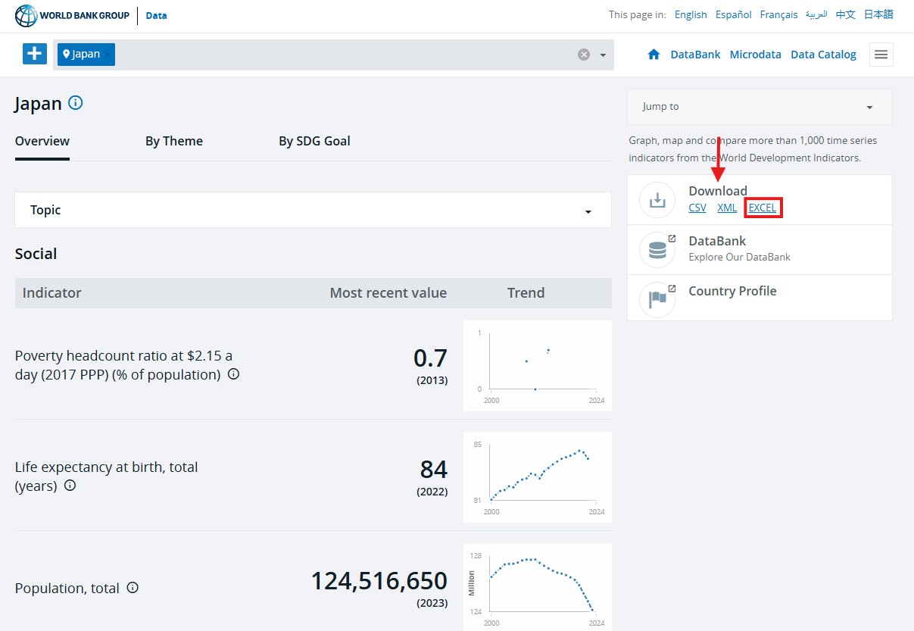
- National statistical agencies, such as the ONS in the United Kingdom, may provide valuable sources of information.
- Government institutions (Central Bank, Parliament, …), such as the Bank of England in the United Kingdom or the Ministry of Finance in Japan, may also make freely available historical data on their website.
5.4 Exercises (Week 20)
In this class, we will discuss several tools to identify business cycle events. We will use the “US_DATA” Excel spreadsheet which contains data collected from the FRED (Federal Reserve Economic Data) database. The dataset contains time series of macroeconomic variables related to volumes and prices in the three markets used to describe macroeconomic fluctuations:
- Market for goods: GDP and its components (consumption, investment and government spending) and prices (CPI, GDP deflator)
- Labour market: employment, unemployment and wages
- Financial market: credit, private and public debt, interest rates, asset prices
It also contains data related to the production sector (industrial production, PPI, sector-specific measures of activity and income). A complete analysis of a business cycle event should keep track of what is happening in all three markets. The legend sheet provides information regarding the variables in the dataset. You may also check the FRED website (which can be accessed here) to complement this information if needed.
Exercise 1: Indexing: construction and interpretation
National statistical agencies construct index measures of prices and economic activity to summarize within a single measure key macroeconomic trends in production (industrial production index) and prices (CPI, GDP deflator). The latter are used to construct inflation measures.
The analyst may also want to transform measures of economic activity (eg GDP) by indexing them to a common starting point. These can be used to quickly evaluate the percentage change in a variable between an initial point and any subsequent period and to compare the growth rates of variables of different magnitude.
PART A: Price indices and inflation
- What do the CPI and the GDP deflator represent? What is the difference between the CPI and the GDP deflator?
- The measure of the consumer price index in this dataset is indexed with base year 1982-1984 (1983 to simplify). In January 2025, the CPI is equal to 324,739. What does this number represent?
- Using the variable CPILFESL (“MONTHLY” sheet), calculate the annual inflation rate and represent it on a line plot. What was the annual inflation rate in September 2024 in the United States?
PART B: Indexing variables to a common starting point
By indexing a variable X to a base period t_0 (= base period) so that the indexed variable is equal to 100 in the base period, apply the following equation: \[X_t^{index} = \frac{X_t}{X_0}\times 100 \]
- Copy the variables GDPC1, PCECC96 and GPDIC1 (“QUARTERLY” sheet) and between 1999Q1 and 2005Q4 on a new sheet. Calculate the indexed values of each of the three variables using 2000Q4 as the base period. Plot the three indexed series on the same line plot.
- Using the variable DIVIDEND (“QUARTERLY” sheet), construct an indexed series of corporate dividends using 1971Q1 as the base period. Represent the series together with the NASDAQCOM series on the same line plot.
Exercise 2: Identifying and describing recessions
There is not one method of identifying recessions. However, one commonly used definition which can be used as a starting point is that of two consecutive quarters of negative growth. Other useful concept that ae helpful to identify and describe business cycles and recessions are that of peak and trough. The peak of a business cycle is achieved in the quarter before the start of a recession and the trough of a recession is achieved in the quarter before the start of the recovery.
PART A: Identifying recessions using GDP data
- Using the variable GDPC1 (“QUARTERLY” sheet) between 2000Q1 and 2024Q2, construct the series of quarterly GDP growth rate.
- Identify all the quarters where there are at least two consecutive quarters of negative growth rates and compare them with the three recessions identified by the NBER dating committee (here). Do you notice any difference?
- For each of the three NBER recessions in this period, create an indexed series of GDP value with base period equal to the quarter before the start of the recession (Note: you have already calculate this for the 2001 recession in Exercise 1 PART Ba). Represent the indexed series on the same plot for up to 20 quarters after the start of the recession. Use this plot to compare the depth of the recessions and identify the trough of the recessions.
PART B: Using production and labour market data
- Plot the variable UNRATE (“MONTHLY” sheet) between 2000Q1 and 2024Q4. For each recession, by how much did the unemployment rate increase following each recession? When was maximum unemployment achieved?
- Using the variable INDPRO (“MONTHLY” sheet) between 2000Q1 and 2024Q4, by how much has industrial production declined from peak to trough in each recession.
Exercise 3: Identifying asset price bubbles and financial shocks
PART A: Asset price bubbles
Stocks are financial assets that pay dividends to their owners. Dividends are paid out of firms’ profits and tend to increase when profits increase. What determines the price of a stock that promises a stream of dividends in the future? \[Q_t = \frac{E(D_t)}{1+r} + \frac{E(D_{t+1})}{(1+r)^2} + \frac{E(D_{t+3})}{(1+r)^3} + ... \]
The current price of the stock \(Q_t\) is equal to the present discounted value of future expected dividends (the fundamental value of a stock). Stock prices are predicted to increase when expected future profits are higher and when current and expected future interest rates fall. An asset price bubble arises when the price of the stock increases faster than warranted by future expected dividends.
- According to investment theory, what changes to investment expenditures should we observe following a rise in stock prices due to a rise in expected future dividends? A rise in stock prices due to excessive optimism among investors?
- The Nasdaq is one of the most followed stock price index, placing a heavy weight on companies in the information technology sector. Plot the Nasdaq series alongside the index dividend series (See Exercise 1 PART Bb). Is the information on the plot consistent with the presence of an asset price bubble in the early 2000s?
PART B: Financial stress
Yield spreads, the difference between the rates on risky debt instruments (usually corporate bonds with a low rating) and interest rate on safer debt (corporate bonds with good ratings or government bond). They capture difficulties for firms to fund their investment projects in financial markets.
Financial stress indices provide summaries more encompassing of financial stress which may affect financial intermediaries directly. The St-Louis Fed Financials Stress index is one such measure for the United States (see here).
- Using data in the “QUARTERLY” sheet, construct the yield spread between the AAA Corporate bond yield (WAAA) and the BAA Corporate bond yield (WBAA) and represent it on the same graph as the annual real investment growth rate (GCEC1).
- (Optional) Represent the yield spread constructed above and the financial stress index and compare the two measures of financial stress.
Exercise 4 (Optional): Describing the 2001 recession in the US
- Using the remaining information in the dataset, describe what happened during the 2001 recession in the US by creating an appropriate plot:
- Government spending and government debt
- Wages and corporate profits
- Capacity utilization and unemployment duration
- Describe the main characteristics of the 2001 recession in the United States using the information uncovered in all three exercises. What were the main trends and how is it different from the other recessions?